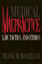
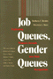

|

|
Rethinking
Sex
Social Theory and Sexuality Research
edited
by Connell, R. W. and G. W. Dowsett
Sex and Gender Section Award for Distinguished Contribution
to the Study of Sex and Gender, American Sociological Association |

|
The
First Suburban Chinatown
The Remarking of Monterey Park, California
Fong,
Timothy P.
Outstanding Book Award in the Social Sciences, Association
for Asian American Studies |

|
Organizing
Asian American Labor
The Pacific Coast Canned-Salmon Industry, 1870-1942
Friday,
Chris
Outstanding Book in History Award, Association for Asian
American Studies |

|
A
World without Words
The Social Construction of Children Born Deaf and Blind
Goode,
David, foreword by Irving Kenneth Zola
Co-winner of the John Horton Cooley Book Award, Society for
the Study of Symbolic Interaction |

|
Shadows
on the Past
Studies in the Historical Fiction Film
Grindon,
Leger
Outstanding Academic Title, Choice |

|
Child,
Parent, and State
Law and Policy Reader
edited
by Humm, Randall S., Beate Anne Ort, Martin Mazen Anbari, Wendy
S. Lader and William Scott Biel
Philadelphia Book Clinic Certificate of Award |

|
Beyond
the Schoolhouse Gate
Free Speech and the Inculcation of Values
Lane,
Robert Wheeler
Outstanding Academic Title, Choice |

|
New
Social Movements
From Ideology to Identity
edited
by Lara�a, Enrique, Hank Johnston and Joseph R. Gusfield
Outstanding Academic Book, Choice |

|
Medical
Malpractice
Law, Tactics, and Ethics
McClellan,
Frank M.
Philadelphia Book Clinic Certificate of Award |

|
Job
Queues, Gender Queues
Explaining Women's Inroads into Male Occupations
Reskin,
Barbara F. and Patricia A. Roos
Sex and Gender Section Award for Distinguished Contribution
to the Study of Sex and Gender, American Sociological Association |

|
Homeless
in Paradise
A Map of the Terrain
Rosenthal,
Rob
Co-winner of the Association for Humanist Sociology Book
Award |

|
No
Easy Walk
Newark, 1980-1993
Stummer,
Helen M.
Philadelphia Book Clinic Certificate of Award |

|
Feminist
Generations
The Persistence of the Radical Women's Movement
Whittier,
Nancy
Outstanding Academic Title, Choice |
|